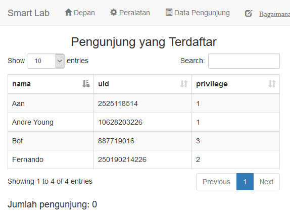
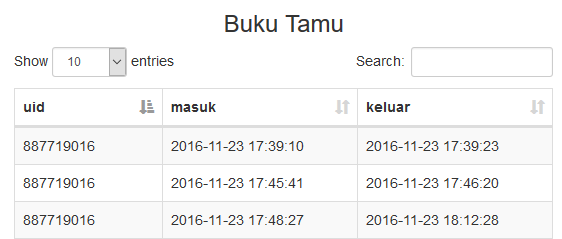
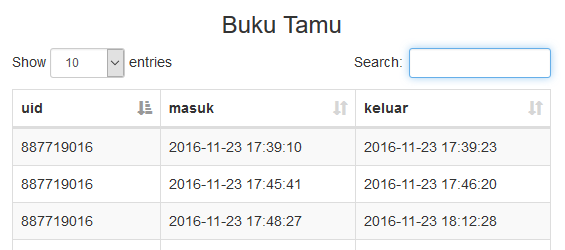
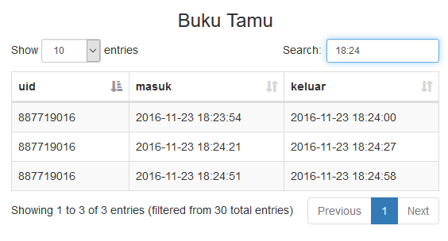

Cukup dengan menekan judul kolom, maka isi dari tabel dapat diurutkan berdasarkan kolom tersebut. Contoh dapat dilihat pada gambar di bawah ini.
Tabel diurutkan berdasarkan privilege.
Tabel diurutkan berdasarkan nama.
Klik kursor pada sebelah kanan seach. Maka kotak search akan tersorot. Untuk lebih jelas dapat dilihat pada gambar di bawah.
Sebelum kotak search disorot.
Setelah kotak search disorot.
Untuk melakukan pencarian pada tabel cukup dengan mengetikannya ke dalam kotak search. Lalu tabel hanya akan memuculkan data yang berkaitan dengan pencarian, seperti gambar dibawah ini.
